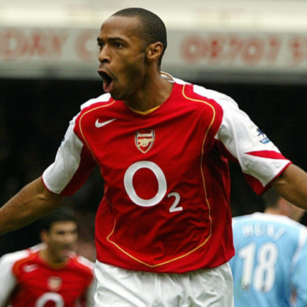
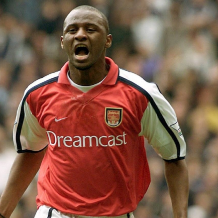
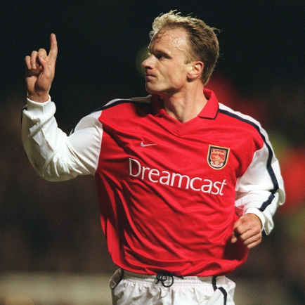
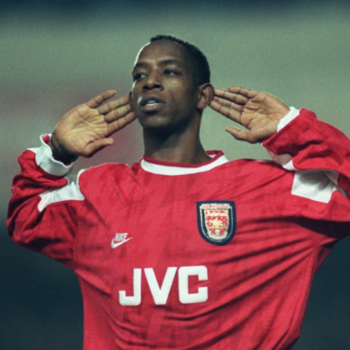

Arsenal
O clube disputa a Premier League e é um dos mais bem sucedidos do futebol de seu país, tendo ganho por 13 vezes o título de campeão do Campeonato Inglês, sendo o terceiro em número de conquistas, e por 14 vezes a Copa da Inglaterra (recorde),[3] é o único a ganhar a Premier League de maneira invicta, sendo também detentor do recorde de maior período de invencibilidade na liga nacional.[4][5] No plano internacional, conquistou a Recopa Europeia da UEFA e a Taça das Cidades com Feiras, já tendo sido finalista da Liga dos Campeões da UEFA, a principal competição europeia de clubes. O Arsenal foi o primeiro clube do sul da Inglaterra a se juntar a English Football League, em 1893, chegando a Football League First Division em 1904.
Titulos
Campeonato Inglês: 13
Copa da Inglaterra: 14
Supercopa da Inglaterra: 16
Recopa Europeia da UEFA: 1

Idolos
- 
- 
- 
- 
Thierry Henry
Em 2008, sócios do Arsenal participaram de uma votação oficial do clube para definir os 50 maiores ídolos da história. E o primeiro foi Thierry Henry. Não é uma escolha muito difícil, entretanto. O atacante francês chegou a Londres em 1999 e, durante dez anos, tornou-se sinônimo de Arsenal.
Patrick Vieira
É difícil imaginar no futebol jogadores duros, que chegam forte, mas que ao mesmo tempo jogam com classe. Patrick Vieira preenche bem ambas as características. Tanto na dureza quanto na qualidade, tornou-se um grande símbolo, uma lenda da história do Arsenal. O francês chegou ainda desconhecido, em 1996, e logo fez o seu nome. Exemplo de raça e liderança em campo, Vieira logo se estabeleceu como uma liderança do time. Os duelos com Roy Keane e o Manchester United eram cheios de faíscas. E em 2002, com a saída de Tony Adams, Vieira assumiu o posto de capitão. Ficou com a faixa até deixar Londres rumo à Juventus, em 2005.
Dennis Bergkamp
A era do “Boring Arsenal” começa a acabar a partir da metade dos anos 1990. E não é coincidência que ela choque com o momento da chegada de Dennis Bergkamp. O atacante holandês é lembrado até hoje como um dos grandes jogadores da história do esporte, e tornou-se talvez o maior ídolo do Arsenal, jogando entre 1995 e 2006. Técnica, intensidade, habilidade, força física e genialidade. Bergkamp juntou isso tudo e mudou o conceito de atacantes no futebol inglês. Fez incríveis 120 gols, um número impressionante – ainda mais isso para um atacante que não era exatamente de presença de área. Por anos, foi a grande liderança técnica de um time que encantou a Inglaterra
Ian Wright
Ian Wright já era conhecido quando chegou a Highbury em 1991. Após sete temporadas e um bom sucesso no Crystal Palace, o atacante causou expectativa. E encerou sua passagem em 1998 como um dos maiores ídolos da história do Arsenal. Foram 185 gols em 288 jogos, o segundo maior artilheiro da história da equipe.
Emirates Stadium
O Emirates Stadium é a casa do Arsenal FC, um dos times mais premiados da Inglaterra. Inaugurado em 2006 e com uma capacidade para mais de 60.000 pessoas, é um dos poucos estádios da Europa que conta a categoria máxima de estrelas da FIFA.